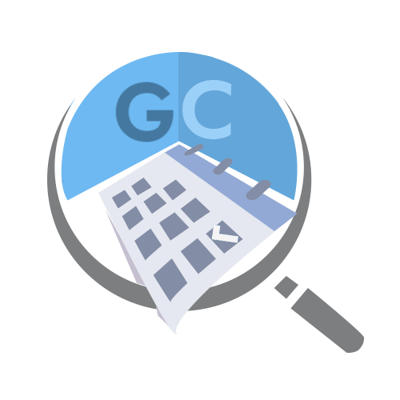

<!--
  Generated template for the ChooseoptPage page.

  See http://ionicframework.com/docs/components/#navigation for more info on
  Ionic pages and navigation.
-->
<ion-header>

  <ion-navbar>
    <button ion-button menuToggle>
      <ion-icon name="menu"></ion-icon>
    </button>
    <ion-title>Reservation Type</ion-title>
  </ion-navbar>

</ion-header>


<ion-content>
  <ion-list>
    <ion-item>
      <ion-thumbnail item-start>
        
      </ion-thumbnail>
      <h2>Function Rooms</h2>
      <p>for Trainings and Seminars</p>
      <button round outline ion-button item-end (click)="setPush('Functions')">
        Select&nbsp; &nbsp;
        <ion-icon name="arrow-round-forward"></ion-icon>
      </button>
    </ion-item>
    <ion-item>
      <ion-thumbnail item-start>
        
      </ion-thumbnail>
      <h2>Rooms/Labs</h2>
      <p>for Small talks</p>
      <button round outline ion-button item-end (click)="setPush('Rooms')">
        Select&nbsp; &nbsp;
        <ion-icon name="arrow-round-forward"></ion-icon>
      </button>
    </ion-item>
    <ion-item>
      <ion-thumbnail item-start>
        
      </ion-thumbnail>
      <h2>Equipments</h2>
      <p>Item Equipment</p>
      <button round outline ion-button item-end (click)="setPush('Equip')">
        Select&nbsp; &nbsp;
        <ion-icon name="arrow-round-forward"></ion-icon>
      </button>
    </ion-item>
  </ion-list>
</ion-content>